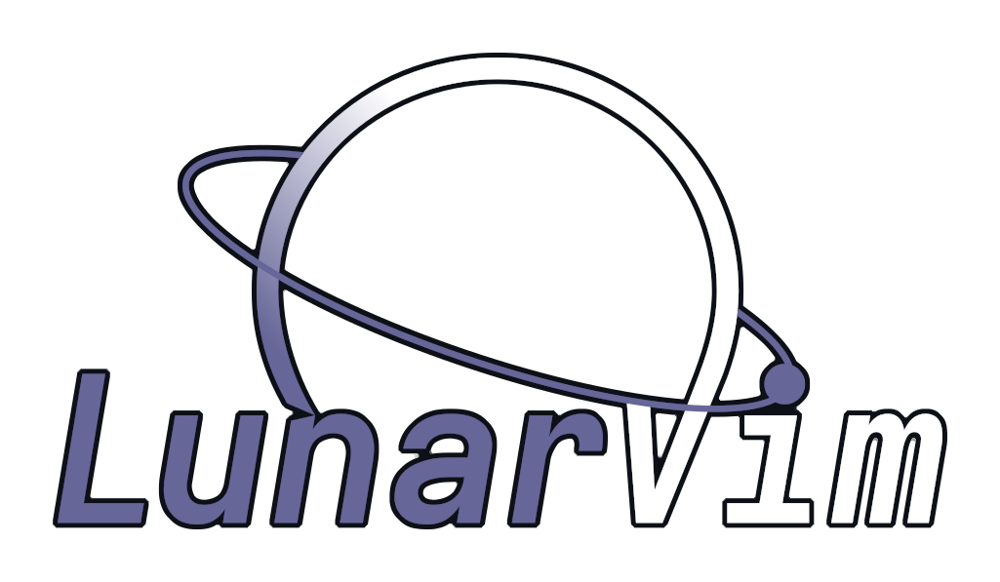

Biography
| Ph.D. student at Institute of Information Engineering, Chinese Academy of Sciences, studying computer science, focusing on machine learning for natural language. As a young researcher, your interest and kind citation (star) will definitely mean a lot for me and my collaborators. |
Education
| Sep. 2017 - Jul. 2022 (Expected) Institute of Information Engineering, Chinese Academy of Sciences, Beijing, China Ph.D. in Computer Science |
|
| Jan. 2017 - Jul. 2017 STIC/OSM Laboratory, École Nationale Supérieure de Techniques Avancées de BretagneENSTA Bretagne, Brest, France Study Abroad Funded by CSC |
|
 |
Jul. 2014 - Jul. 2017 Computer and Communication Engineering College, China University of Petroleum (East China), Qingdao, China B.S. in Computer Science and Technology |
|
Sep. 2012 - Jul. 2014 School of Geosciences, China University of Petroleum (East China), Qingdao, China B.S. in Surveying Engineering |
Publications
-
Ruipeng Jia, Xingxing Zhang, Yanan Cao, Shi Wang, Zheng Lin and Furu Wei. Neural Label Search for Zero-Shot Multi-Lingual Extractive Summarization. The 60th Annual Meeting of the Association for Computational Linguistics (ACL'2022, Main Conference). Dublin, Ireland. May, 2022. [PDF], [Code].
-
Hanwei Wang, Piji Li, Yanan Cao, Ruipeng Jia, Wang Hai-long and Li Yang-chun. Decoupled Extractive Summarization as Graph Nodes Pruning. The 2022 International Joint Conference on Neural Networks (IJCNN'2022). Padua, Italy. July, 2022.
-
Ruipeng Jia, Yanan Cao, Fang Fang, Yuchen Zhou, Zheng Fang, Yanbing Liu and Shi Wang. Deep Differential Amplifier for Extractive Summarization. The 59th Annual Meeting of the Association for Computational Linguistics (ACL'2021, Main Conference). Page 366-376. Bangkok, Thailand. August, 2021. [PDF], [Code].
-
Ruipeng Jia, Yanan Cao, Haichao Shi, Fang Fang, Pengfei Yin, and Shi Wang. Flexible Non-Autoregressive Extractive Summarization with Threshold: How to Extract a Non-Fixed Number of Summary Sentences. The Thirty-Fifth AAAI Conference on Artificial Intelligence (AAAI'2021). Page 13134-13142. Vancouver, Canada. February, 2021. [PDF], [Code].
-
Zheng Fang, Yanan Cao, Tai Li, Ruipeng Jia, Fang Fang, Yanmin Shang and Yuhai Lu. TEBNER: Domain Specific Named Entity Recognition with Type Expanded Boundary-aware Network. The 2021 Conference on Empirical Methods in Natural Language Processing (EMNLP'2021, Main Conference). Punta Cana, Dominican Republic. November, 2021.
-
Hengzhu Tang, Yanan Cao, Zhenyu Zhang, Ruipeng Jia, Fang Fang, and Shi Wang. Multi-Granularity Heterogeneous Graph for Document-Level Relation Extraction. 2021 IEEE International Conference on Acoustics, Speech and Signal Processing (ICASSP'2021). Toronto, Canada. June, 2021.
-
Ruipeng Jia, Yanan Cao, Hengzhu Tang, Fang Fang, Cong Cao and Shi Wang. Neural Extractive Summarization with Hierarchical Attentive Heterogeneous Graph Network. The 2020 Conference on Empirical Methods in Natural Language Processing (EMNLP'2020, Main Conference). Page 3622–3631. Barcelona, Spain. November, 2020. [PDF], [Code].
-
Ruipeng Jia, Yanan Cao, Haichao Shi, Fang Fang, Yanbing Liu and Jianlong Tan. DistilSum: Distilling the Knowledge for Extractive Summarization. 29th ACM International Conference on Information and Knowledge Management (CIKM'2020). Page 2069–2072. Galway, Ireland. October, 2020. [PDF], [Code].
-
Ruipeng Jia, Yanan Cao, Fang Fang, Jinpeng Li, Yanbing Liu and Pengfei Yin. Enhancing Pre-trained Language Representation for Multi-Task Learning of Scientific Summarization. The 2020 International Joint Conference on Neural Networks (IJCNN'2020). Page 1-8. Glasgow, UK. July, 2020.
-
Jinpeng Li, Chuang Zhang, Xiaojun Chen, Yanan Cao and Ruipeng Jia. Improving Abstractive Summarization with Modeling Iterative Representation. The 2020 International Joint Conference on Neural Networks (IJCNN'2020). Glasgow, UK. July, 2020.
-
Ruipeng Jia, Yanan Cao, Fang Fang, Jinpeng Li, Yanbing Liu and Pengfei Yin. Enhancing Textual Representation for Abstractive Summarization: Leveraging Masked Decoder. The 2020 International Joint Conference on Neural Networks (IJCNN'2020). Page 1-8. Glasgow, UK. July, 2020.
-
Hao Xu, Yanan Cao, Ruipeng Jia, Yanbing Liu and Jianlong Tan. Sequence Generative Adversarial Network for Long Text Summarization. IEEE 30th International Conference on Tools with Artificial Intelligence (ICTAI'2018). Volos, Greece. November, 2018.
Working Experience
| July. 2022 - Now Engineer at Baidu Beijing, China |
|
| Mar. 2021 - Sep. 2021 Research Intern in the Natural Language Computing at Microsoft Research Beijing, China |
|
| Mar. 2018 - Jun. 2018 Research Intern in the Data Science Lab at JD.com Beijing, China |
Skills
Language
 |
 |
|||
| Python | Golang | Lua | Lisp | C++ |
 |
 |
 |
 |
|
| NodeJS | HTML | CSS | JavaScript | TypeScript |
Machine Learning
| Pytorch | PaddlePaddle |
Web
 |
||
| Vue | Django | Hugo |
IDE
|  |  |
 |
|
| Spacemacs | LunarVim | VSCode | Pycharm |